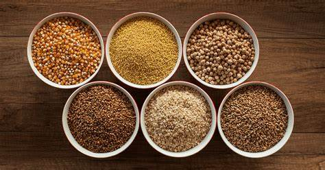

Dicas para uma Alimentação Saudável
1. Inclua Mais Frutas e Vegetais
Frutas e vegetais são ricos em vitaminas, minerais e fibras. Eles ajudam a melhorar a digestão, fortalecer o sistema imunológico e reduzir o risco de doenças crônicas. Tente incluir uma variedade de cores no seu prato para obter uma ampla gama de nutrientes.

2. Hidrate-se Adequadamente
A água é essencial para quase todas as funções do corpo, incluindo a digestão e a regulação da temperatura. É recomendado beber pelo menos 8 copos de água por dia. Evite bebidas açucaradas e alcoólicas que podem contribuir para desidratação.
3. Prefira Grãos Integrais
Grãos integrais, como arroz integral, aveia e quinoa, são mais nutritivos do que grãos refinados. Eles contêm mais fibras, vitaminas e minerais e ajudam a manter níveis estáveis de açúcar no sangue e a melhorar a saúde digestiva.
4. Modere o Consumo de Açúcares e Gorduras
Excesso de açúcares e gorduras saturadas pode levar a problemas de saúde, como diabetes tipo 2 e doenças cardíacas. Prefira alimentos com baixo teor de açúcar e gorduras saudáveis, como as encontradas em abacates e nozes.
.jpg)
5. Coma em Porções Adequadas
Preste atenção ao tamanho das porções para evitar comer em excesso. Utilize pratos menores e preste atenção aos sinais de fome e saciedade do seu corpo.
6. Planeje suas Refeições
Planejar suas refeições com antecedência pode ajudar a evitar escolhas alimentares impulsivas e pouco saudáveis. Prepare um cardápio semanal e faça uma lista de compras para garantir que você tenha todos os ingredientes necessários para refeições balanceadas.
<